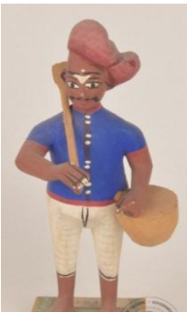

🔇 Is bhasha me is vastu ka audio abhi uplabdh nahi hai.
5. MS - 4764: एक पुरुष की मूर्ति

5. MS - 4764
एक आदमी की रंगीन आकृति चौकोर आधार पर खड़ी है। वह अपने बाएँ हाथ में एक टोकरी और कंधे पर छड़ी लिए हुए है, सिर पर लाल पगड़ी, नीला कोट और सफ़ेद तंग धोती पहने हुए है। कोंडापल्ली खिलौने मुलायम लकड़ी से बनाए जाते हैं जिसे तेल्ला पोनिकि कहा जाता है, जो नज़दीकी कोंडापल्ली पहाड़ियों में पाई जाती है। फिर मक्कू (इमली के बीज के चूर्ण और चूरा का पेस्ट) का उपयोग टुकड़ों को जोड़ने, बारीकियाँ जोड़ने और खिलौनों को पूरा करने के लिए किया जाता है। यह खिलौना आकृति कोंडापल्ली से संबंधित है। वर्तमान में कोंडापल्ली गाँव, आंध्र प्रदेश के एनटीआर जिले में स्थित है। इसे आंध्र प्रदेश के भौगोलिक संकेत (Geographical Indication) हस्तशिल्प के रूप में पंजीकृत किया गया था। इस कला की परंपरा 400 वर्षों पुरानी है और इसका इतिहास 19वीं सदी तक जाता है।
5. MS - 4764: Figure of a Man
5. MS - 4764
A coloured figure of a man stands on a square base. He carries a basket in his left hand and a stick over his shoulder, wearing a red turban, a blue coat and a white close-fitting dhoti. Kondapalli toys are made from a soft wood called Tella Poniki, found in the nearby Kondapalli hills. Makku — a paste of tamarind seed powder and sawdust — is then used to join the pieces, add detail and finish the toys. This toy figure belongs to Kondapalli. Today the village of Kondapalli lies in the NTR district of Andhra Pradesh. It has been registered as a Geographical Indication handicraft of Andhra Pradesh. The tradition of this craft is 400 years old and its history goes back to the 19th century.
5. MS - 4764: పురుషుని బొమ్మ
5. MS - 4764
ఈ బొమ్మ 19వ శతాబ్దానికి చెందిన కొండపల్లి (ప్రస్తుతం ఆంధ్రప్రదేశ్లోని NTR జిల్లాలో ఉంది) ఆటబొమ్మ. ఇది చతురస్రాకారపు పీఠంపై నిలబడిన ఒక రంగులు వేసిన పురుషుడి బొమ్మ. అతను ఎరుపు తలపాగా, నీలిరంగు కోటు మరియు తెలుపు రంగు గట్టి ధోతీ ధరించి ఉన్నాడు; తన ఎడమ చేతితో ఒక బుట్టను మోస్తూ, భుజంపై ఒక కర్రను పట్టుకుని ఉన్నాడు. కొండపల్లి బొమ్మలను స్థానికంగా లభించే తెల్ల పొనికి అనే మెత్తని చెక్కతో తయారు చేస్తారు, మరియు బొమ్మ భాగాలను అతికించడానికి, వివరాలను జోడించడానికి చింత గింజల పొడి మరియు రంపపు పొట్టుతో చేసిన మాకు అనే పేస్ట్ను ఉపయోగిస్తారు. 400 సంవత్సరాల సంప్రదాయం కలిగిన ఈ కళాకృతి, ఆంధ్రప్రదేశ్లోని భౌగోళిక సూచిక (Geographical Indication) హస్తకళల్లో ఒకటిగా నమోదైంది.
4. MS - 3025: மானுடன் டயானா (DIANA WITH DEER)
4. MS - 3025
“ஒருசதுரவடிவ பீடத்தின் மேல்நின்று கொண்டிருக்கும்ஒரு மனிதனின் வண்ண மயமான உருவச்சிலை. அவர்இடதுகையில்ஒருகூடைஏந்தியவாறு, தோளின்மீதுஒருகுச்சியைவைத்துக்கொண்டுநிற்கிறார். அவர்சிவப்புநிறத்தலைபாகை, நீலநிறமேல்ஆடைமற்றும்வெள்ளைநிறஇறுக்கமானவேஷ்டிஅணிந்திருக்கிறார்.கொண்டப்பள்ளிபொம்மைகள் ‘தெல்லபொனிக்கி’ எனப்படும்மென்மையானமரத்தால்தயாரிக்கப்படுகின்றன; இந்தமரம்கொண்டப்பள்ளிமலைப்பகுதிகளில்கிடைக்கிறது. மேலும் ‘மக்கு’ எனப்படும்புளிவிதைத்தூள்மற்றும்மரத்தூள்கலந்தபேஸ்ட், பொம்மையின்பகுதிகளைஇணைக்கவும், சிறுவிவரங்களைஉருவாக்கவும், இறுதிஅலங்காரத்தைவழங்கவும்பயன்படுத்தப்படுகிறது.இந்தபொம்மைஉருவம்கொண்டப்பள்ளிகைவினைப்பாரம்பரியத்தைச்சேர்ந்தது. தற்போதுகொண்டப்பள்ளிகிராமம்ஆந்திரப்பிரதேசத்தின்என்.டி.ஆர். மாவட்டத்தில்அமைந்துள்ளது. இதுஆந்திரப்பிரதேசத்தின்புவியியல்குறியீட்டுகைவினைப்பொருட்களில்ஒன்றாகப்பதிவுசெய்யப்பட்டதாகும். கொண்டப்பள்ளிபொம்மைகள்உருவாக்கும்கலைசுமார் 400 ஆண்டுகள்பழமையானபாரம்பரியமாகும். இந்தஉருவம் 19ஆம்நூற்றாண்டைச்சேர்ந்ததாகக்கருதப்படுகிறது.
5. MS - 4764: एका पुरुषाची मूर्ती
5. MS - 4764
एका पुरुषाची रंगीत आकृती चौकोनी आधारावर उभी आहे. त्याच्या डाव्या हातात टोपली असून खांद्यावर काठी आहे; डोक्यावर लाल पगडी, अंगात निळा कोट आणि पांढरे घट्ट धोतर आहे. कोंडापल्ली खेळणी तेल्ला पोनिकि नावाच्या मऊ लाकडापासून बनवली जातात, जे जवळच्या कोंडापल्ली टेकड्यांमध्ये मिळते. नंतर तुकडे जोडण्यासाठी, बारकावे भरण्यासाठी आणि खेळणी पूर्ण करण्यासाठी मक्कू (चिंचेच्या बियांचे चूर्ण व लाकडाचा भुसा यांचा लगदा) वापरला जातो. ही खेळण्याची आकृती कोंडापल्लीशी संबंधित आहे. सध्या कोंडापल्ली गाव आंध्र प्रदेशातील एनटीआर जिल्ह्यात आहे. याची नोंद आंध्र प्रदेशाच्या भौगोलिक निर्देशांक (Geographical Indication) हस्तकला म्हणून झाली आहे. या कलेची परंपरा ४०० वर्षे जुनी असून तिचा इतिहास १९व्या शतकापर्यंत जातो.
5. എം. എസ്.-4764: പുരുഷരൂപം
5. എം. എസ്.-4764
5. എം. എസ്.-4764: പുരുഷരൂപം
5. MS4764: ಫಿಗರ್ ಆಫ್ ಎ ಮ್ಯಾನ್
5. MS4764
ಒಬ್ಬ ಮನುಷ್ಯನ ಬಣ್ಣ ಬಳಿದ ಶಿಲ್ಪ ಕಲಾಕೃತಿಯು ಚೌಕಾಕಾರದ ಪೀಠದ ಮೇಲೆ ನಿಂತಿದೆ. ಅವನು ತನ್ನ ಎಡಗೈಯಲ್ಲಿ ಒಂದು ಬುಟ್ಟಿಯನ್ನು ಹಿಡಿದುಕೊಂಡಿದ್ದು, ಹೆಗಲ ಮೇಲೆ ಕೋಲನ್ನು ಹೊತ್ತಿದ್ದಾನೆ. ಅವನು ಕೆಂಪು ಮುಂಡಾಸು, ನೀಲಿ ಕೋಟು ಮತ್ತು ಬಿಳಿ ಬಣ್ಣದ ಬಿಗಿಯಾದ ಧೋತಿಯನ್ನು ಧರಿಸಿದ್ದಾನೆ.ಕೊಂಡಪಲ್ಲಿ ಆಟಿಕೆಗಳನ್ನು ಹತ್ತಿರದ ಕೊಂಡಪಲ್ಲಿ ಬೆಟ್ಟಗಳಲ್ಲಿ ಕಂಡುಬರುವ 'ತೆಲ್ಲಾ ಪೋನಿಕಿ' ಎಂಬ ಮೃದುವಾದ ಮರದಕಟ್ಟಿಗೆಯಿಂದ ತಯಾರಿಸಲಾಗುತ್ತದೆ. ನಂತರ ತುಂಡುಗಳನ್ನು ಒಟ್ಟಿಗೆ ಸೇರಿಸಲು, ಸೂಕ್ಷ್ಮ ವಿವರಗಳನ್ನು ಮೂಡಿಸಲು ಮತ್ತು ಆಟಿಕೆಗಳಿಗೆ ಅಂತಿಮ ಸ್ಪರ್ಶ ನೀಡಲು ಹುಣಸೆ ಬೀಜದ ಪುಡಿ ಹಾಗೂ ಮರದ ಹೊಟ್ಟಿನಿಂದ ಮಾಡಿದ 'ಮಕ್ಕು' ಎಂಬ ಲೇಪನವನ್ನು ಬಳಸಲಾಗುತ್ತದೆ.ಈ ಆಟಿಕೆಯ ಶಿಲ್ಪ ಕಲಾಕೃತಿಯು ಕೊಂಡಪಲ್ಲಿಗೆ ಸೇರಿದೆ. ಈಗ ಕೊಂಡಪಲ್ಲಿ ಗ್ರಾಮವು ಆಂಧ್ರಪ್ರದೇಶದ ಎನ್ಟಿಆರ್ ಜಿಲ್ಲೆಯಲ್ಲಿದೆ. ಇದು ಆಂಧ್ರಪ್ರದೇಶದ ಭೌಗೋಳಿಕ ಸೂಚ್ಯಂಕ ಡೆದ ಕರಕುಶಲ ವಸ್ತುಗಳಲ್ಲಿ ಒಂದಾಗಿ ನೋಂದಾಯಿಸಲ್ಪಟ್ಟಿದೆ. ಈ ಕರಕುಶಲ ಕಲೆಯು 400 ವರ್ಷಗಳ ಹಳೆಯ ಸಂಪ್ರದಾಯವಾಗಿದೆ. ಇದು 19 ನೇ ಶತಮಾನದಷ್ಟು ಹಳೆಯದಾಗಿದೆ.
5. MS - 4764: ଜଣେ ମଣିଷର ମୂର୍ତ୍ତି
5. MS - 4764
ଗୋଟିଏ ବର୍ଗାକାର ଆଧାର ଉପରେ ଗୋଟିଏ ପୁରୁଷ ପ୍ରତିମୂର୍ତ୍ତି ଠିଆ ହୋଇଅଛି। ଏଠାରେ ମୂର୍ତ୍ତିଟି ବାମ ହାତରେ ଗୋଟିଏ ଟୋକେଇ ଏବଂ ଆର ହାତର କାନ୍ଧରେ ବାଡ଼ି ଧରିଥିବା ଦେଖିପାରିବା,ତାହା ସହିତ ମୁଣ୍ଡରେ ଲାଲ ପଗଡ଼ି, ଦେହରେ ନୀଳ ରଙ୍ଗର କୋଟ୍ ଏବଂ ଧଳା ଧୋତି ପିନ୍ଧିଥିବା ଦେଖିବାକୁ ମିଳିଥାଏ। କୋଣ୍ଡାପାଲି ଖେଳଣାଗୁଡ଼ିକ ନିକଟସ୍ଥ କୋଣ୍ଡାପାଲି ପାହାଡ଼ରେ ମିଳୁଥିବା ଟେଲା ପୋନିକି ନାମକ ନରମ କାଠରୁ ତିଆରି ହୋଇଥାଏ। ଏହାକୁ ତେନ୍ତୁଳି ମଞ୍ଜି ଏବଂ କାଠ ଗୁଣ୍ଡରୁ ତିଆରି ମକ୍କୁ ନାମକ ଅଠା ବ୍ୟବହାର କରି ତିଆରି କରାଯାଇଥାଏ, ଏହି ଖଣ୍ଡଗୁଡ଼ିକୁ ଯୋଡିବା ପାଇଁ ଏବଂ ଖେଳଣାଗୁଡ଼ିକୁ ପୂର୍ଣ୍ଣ ରୂପ ଦେବାକୁ ଏହି ଅଠାର ବ୍ୟବହାର କରାଯାଇଥାଏ। ଏହି ଖେଳଣାଟି କୋଣ୍ଡାପାଲିରେ ନିର୍ମିତ ଅଟେ। ବର୍ତ୍ତମାନ କୋଣ୍ଡାପାଲି ଗ୍ରାମଟି ଆନ୍ଧ୍ର ପ୍ରଦେଶର ଏଣ୍ଟିଆର୍ ଜିଲ୍ଲାରେ ଅନ୍ତର୍ଭୁକ୍ତ ଅଟେ। ଏହା ଆନ୍ଧ୍ରପ୍ରଦେଶର ଭୌଗୋଳିକ ସୂଚକ ହସ୍ତଶିଳ୍ପ ସ୍ଥାନ ମଧ୍ୟରୁ ଅନ୍ୟତମ ଭାବରେ ପଞ୍ଜୀକୃତ ହୋଇଅଛି। ଏହି ହସ୍ତଶିଳ୍ପ କଳା ଭାରତର 400 ବର୍ଷ ପୁରୁଣା ପରମ୍ପରାକୁ ସୂଚାଇଥାଏ। ଏହା 19ଶ ଶତାବ୍ଦୀରେ ଆବିଷ୍କୃତ ହୋଇଥିଲା।
5. MS - 4764: পুরুষমূর্তি
5. MS - 4764
একটি বর্গাকার আধারের ওপর দাঁড়িয়ে থাকা একজন পুরুষের রঙিন মূর্তি।সে তার বাম হাতে একটি ঝুড়ি ধরে আছে এবং কাঁধের ওপর একটি লাঠি রাখা আছে; তার পরনে একটি লাল পাগড়ি, নীল কোট এবং সাদা আঁটো-সাঁটো ধুতি রয়েছে। কোন্ডাপল্লী খেলনাগুলি'তেল্লা পোনিকি' নামক নরম কাঠ দিয়ে তৈরি করা হয়, যা নিকটবর্তী কোন্ডাপল্লী পাহাড়ে পাওয়া যায়। এরপর তেঁতুলের বীজের গুঁড়ো এবং কাঠের গুঁড়োর মিশ্রণে তৈরি 'মাক্কু' নামক একটি কাই বা পেস্ট ব্যবহার করা হয় খেলনার অংশগুলি জুড়তে, সূক্ষ্ম কারুকাজ করতে এবং খেলনাটিকে পূর্ণরূপ দিতে। এই খেলনা মূর্তিটি কোন্ডাপল্লীর। বর্তমানে কোন্ডাপল্লী গ্রামটি অন্ধ্রপ্রদেশের এনটিআরজেলায় অবস্থিত। এটি অন্ধ্রপ্রদেশের অন্যতম ভৌগোলিক নির্দেশক বা জি.আই.ট্যাগহস্তশিল্প হিসেবে নিবন্ধিত হয়েছে। এই কারুশিল্পের ঐতিহ্য ৪০০ বছরের পুরনো এবং এটি ১৯ শতকেরএকটি নিদর্শন।
5. ایمایس-4764: ایکآدمیکا مجسمہ
5. ایمایس-4764
ایک آدمی کا پینٹ کیا ہوا مجسمہ مربع بنیاد پر کھڑا ہے۔ وہ بائیں ہاتھ میں ایک ٹوکری اور کندھے پر چھڑی اٹھائے ہوئے ہے، سر پر سرخ پگڑی، نیلا کوٹ اور سفید تنگ دھوتی پہنے ہوئے ہے۔ کونڈاپالی کھلونے نرم لکڑی سے بنائے جاتے ہیں جسے ٹیلاپونیکی کہتے ہیں، جو قریبی کونڈاپالی پہاڑیوں میں پائی جاتی ہے۔ پھر مکّو، جس میں املی کے بیج کا پاؤڈر اور آہنی گوند شامل ہوتی ہے، کو ٹکڑوں کو جوڑنے، تفصیلات بنانے اور کھلونوں کو مکمل کرنے کے لیے استعمال کیا جاتا ہے۔ یہ کھلونا کا مجسمہ کونڈاپالی سے تعلق رکھتا ہے۔ آج کونڈاپالی گاؤں آندھرا پردیش کے این ٹی آر ضلع میں واقع ہے۔ اسے آندھرا پردیش کے جغرافیائی شناختی ہنر کا حصہ کے طور پر رجسٹر کیا گیا تھا۔ یہ کاریگری کا فن 400 سال پرانی روایت رکھتا ہے اور یہ 19ویں صدی کا ہے۔
5. MS -4764: એક માણસનું ચિત્ર
5. MS -4764
ચોરસ પાયા પર એક માણસની ચિત્રિત આકૃતિ ઉભી છે. તે તેના ડાબા હાથમાં ટોપલી અને ખભા પર લાકડી લઈને, લાલ પાઘડી, વાદળી કોટ અને સફેદ ચુસ્ત ધોતી પહેરેલ છે. કોંડાપલ્લી રમકડાં ટેલા પોનીકી તરીકે ઓળખાતા નરમ લાકડામાંથી બનાવવામાં આવે છે, જે નજીકના કોંડાપલ્લી ટેકરીઓમાં જોવા મળે છે. પછી મક્કુ, એટલે કે ઈમલીના બીજના ચૂર્ણ અને કરબની ભૂકીનું લોટ જેવું મિશ્રણ, ભાગોને જોડવા, વિગતો ઉમેરવા અને રમકડાંને પૂર્ણ આકાર આપવા માટે ઉપયોગમાં લેવાય છે. આ રમકડાની આકૃતિ કોંડાપલ્લીની છે. હવે કોંડાપલ્લી ગામ આંધ્રપ્રદેશના NTR જિલ્લામાં છે. તે આંધ્રપ્રદેશના ભૌગોલિક સંકેત હસ્તકલામાંના એક તરીકે નોંધાયેલ છે. હસ્તકલાની કળા 400 વર્ષ જૂની પરંપરા છે. તે 19મી સદીની છે.